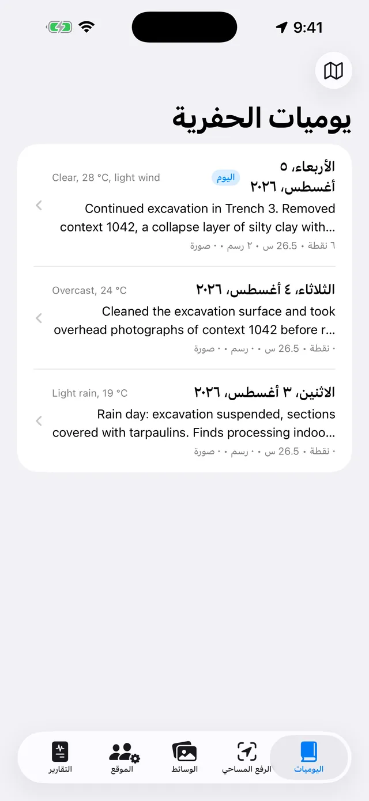
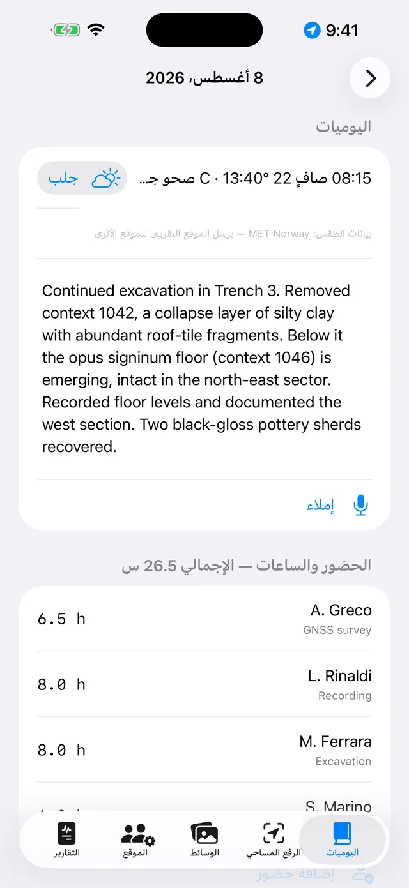
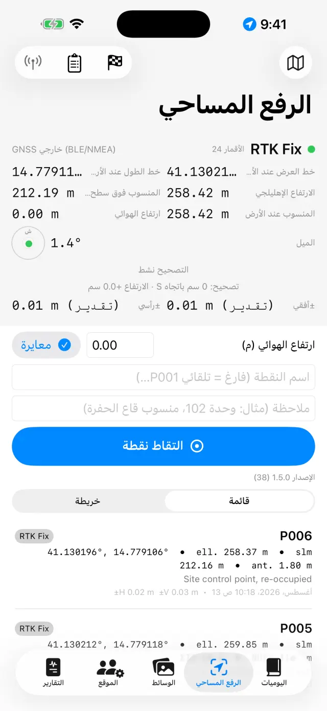
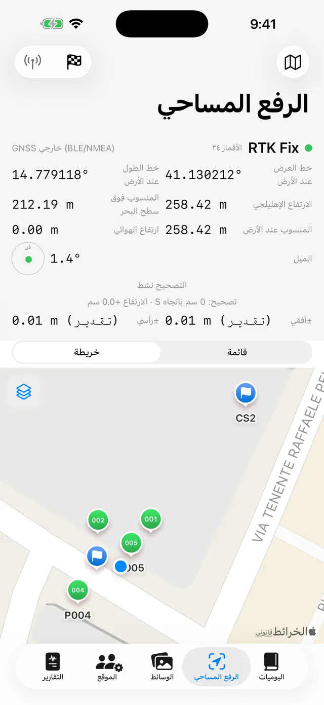
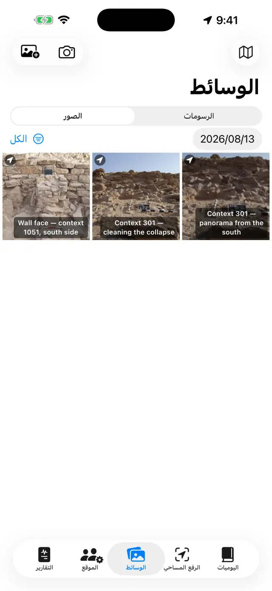
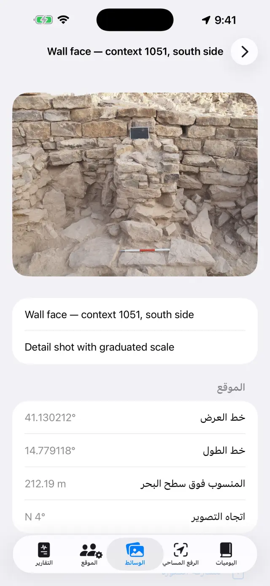
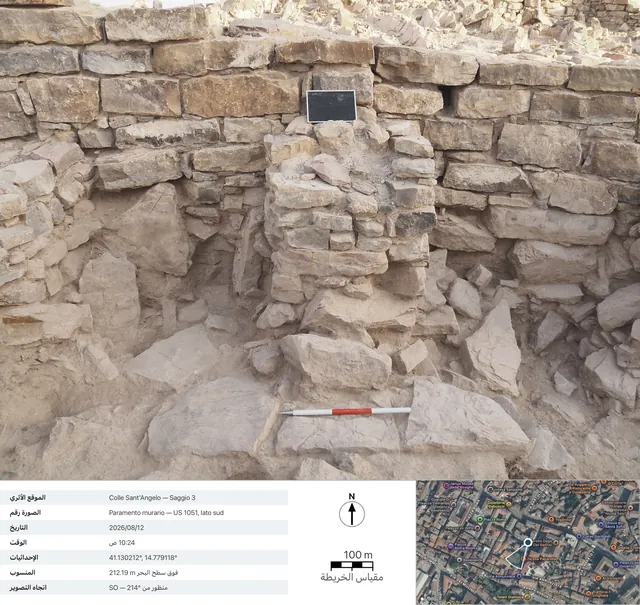
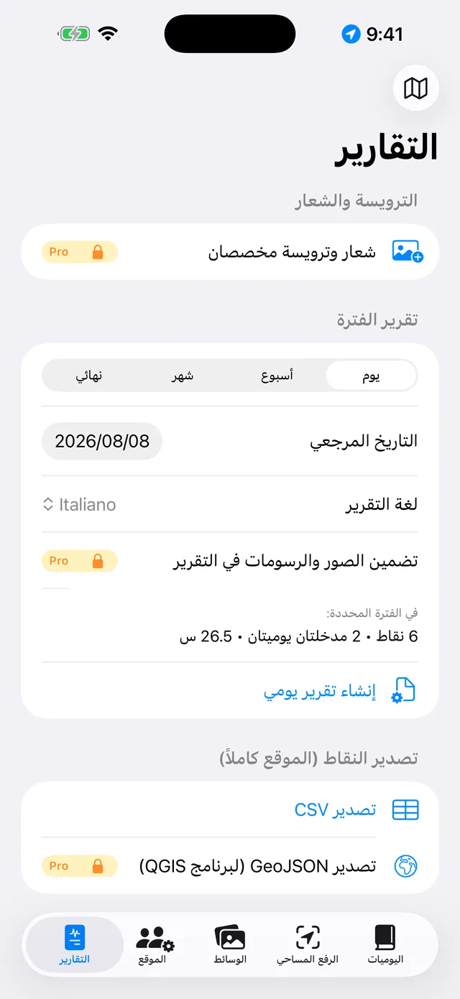

يوميات التنقيب الرقمية لأجهزة iPhone وiPad. يعمل التطبيق دون اتصال بالإنترنت بنسبة 100٪: بياناتك تبقى على جهازك.
باختصار
فكرة واحدة تحكم كل شيء: كل يوم تنقيب هو صفحة تمتلئ من
تلقاء نفسها. أنت تسجّل الأشياء في مكانها — نقطة GNSS في الرفع المساحي، صورة في
الوسائط، ساعات العمل في الموقع — وصفحة اليوم في اليوميات تجمعها كلها
تلقائيًا. وفي نهاية الأسبوع أو نهاية التنقيب، تُبنى التقارير وحدها من هذه
الصفحات.
يوم عمل نموذجي
الصباحافتح صفحة اليوم، ودوّن حالة الطقس واليوميات (أو تحدث عبر إملاء)
الفريقفي الموقع سجّل الحاضرين وساعاتهم
الرفع المساحيالتقط نقاط GNSS؛ وتحقق من نقطة مرجعية أولًا إن كنت تستخدم RTK
الصورصوّر من الوسائط: تُرفق الإحداثيات تلقائيًا
الرسوماتارسم المقطع أو المسقط فوق صورة (ورق شفاف رقمي)
المساءمن التقارير أنشئ التقرير اليومي: ملف PDF جاهز للإرسال
الخطوات الأولى
عند أول تشغيل ستجد موقعًا تجريبيًا. لإنشاء موقعك الخاص المس اسم الموقع في
الأعلى (أيقونة 🗺) ← موقع جديد… وأعطه اسمًا (مثل «تل
الأنصاري — مربع 3»).
اسم الموقع النشط ظاهر دائمًا في الأعلى: كل الألسنة تعرض بيانات ذلك الموقع.
لتبديل الموقع المس الاسم مرة أخرى: تجد القائمة تحت عنوان «مواقعك»، وبخيار
إعادة تسمية الموقع… تُصحّح اسمًا دون أن تفقد شيئًا.
امنح الأذونات عند طلبها: الموقع الجغرافي (للنقاط)،
الكاميرا (للصور)، الميكروفون (للإملاء)،
البلوتوث (فقط إن كنت تستخدم مستقبلًا خارجيًا).
الألسنة الخمسة
📓 اليوميات
المس يومًا لفتح صفحته: اليوميات والطقس والفريق والنقاط والصور ورسومات ذلك
اليوم كلها هناك.
اكتب اليوميات أو المس إملاء وتحدث: يجري التفريغ الصوتي على
الجهاز نفسه ويعمل دون شبكة.
يمكن كتابة الطقس يدويًا (مثلاً «صافٍ، 28 °م، رياح خفيفة») أو جلبه بزر
جلب، الذي يسأل هيئة الأرصاد النرويجية عن الأحوال الحالية. يحتاج إلى
اتصال بالشبكة ويعمل ليوم اليوم فقط: طقس الأمس لم يعد قابلاً للاسترجاع. ولمسة
ثانية بعد الظهر تضيف قياسًا آخر. وما تكتبه بيدك له الأسبقية دائمًا.
عند الجلب لا يغادر الجهاز سوى موقع المنطقة مقرَّبًا إلى نحو 11 مترًا، وفي
التقارير يظهر السطر بلغة التقرير.

قائمة أيام التنقيب

صفحة يوم واحد
📍 الرفع المساحي
تعرض اللوحة العلوية الموقع الحي: الإحداثيات والمناسيب والدقة ونوع الحل
(GPS / RTK Float / RTK Fix).
إن كنت تستخدم عصا، اضبط ارتفاع الهوائي (م): يُختزل منسوب النقطة
إلى الأرض تلقائيًا.
المس التقاط نقطة. الأسماء متسلسلة (P001، P002…) ويمكنك كتابة
اسمك الخاص (مثل «وحدة 102 — قاع الحفرة») وإضافة ملاحظة.
بدّل بين القائمة والخريطة لرؤية النقاط في مكانها؛
ومن الخريطة يمكنك تفعيل السجل العقاري أو خدمة WMS أخرى.
النقاط المرجعية (🏁) لها قسم خاص: استوردها من CSV أو أنشئها، ثم افتح
فحص مباشر وراقب الفروق ΔN/ΔE/ΔZ والقضيب على الوتد، قبل أن تبدأ
الرفع.
تحت دفاتر التسوية يوجد دفتر الميدان الخاص بالميزان البصري:
محطات، وقراءات خلفية وأمامية، ومناسيب تُحسب من نقطة مرجعية للبداية، مع التحقق
من الإغلاق. النقاط المسوّاة تدخل الموقع بمنسوبها، تمامًا مثل نقاط GNSS.
تحت اللوحة تجد تسجيلات NMEA: يُحفظ التدفق الخام للمستقبل
الخارجي PRO في ملفات من تلقاء نفسه — يبدأ التسجيل حين
تشغّل الهوائي وينتهي حين تطفئه، دون أن تحتاج إلى تذكّر ذلك. وهو يفيد لإعادة
قراءة يوم مشكوك فيه أو لتسليم البيانات الخام لمن يعالجها لاحقًا. ويمكن مشاركة
الملفات وحذفها، إلا ملف التسجيل الجاري؛ وتُفتح القائمة حتى والمستقبل مطفأ،
فتبقى ملفات الأمس في المتناول.

لوحة GNSS في الرفع المساحي

النقاط والنقاط المرجعية على الخريطة
تحفظ كل نقطة المنسوبين معًا: الإهليلجي
والأورثومتري (فوق سطح البحر). مع GPS الداخلي للهاتف قد لا يتوفر المنسوب
الأورثومتري؛ فهو يحتاج مستقبلًا خارجيًا (انظر أدناه).
📷 الوسائط
صوّر بزر الكاميرا أو استورد من مكتبة الصور.
تُسمّى الصور تلقائيًا بالتسلسل (F001، F002…) وتُسند جغرافيًا بآخر موقع
GNSS متاح.
عند الالتقاط يسجّل التطبيق أيضًا اتجاه التصوير من البوصلة:
في تفاصيل الصورة وفي التقارير تقرأ «منظور من SO — 214°»، وفي اللقطات
الملتقطة عموديًا من الأعلى (المسقط، قاع الوحدة) تظهر عبارة «النظير» مع اتجاه
الحافة العلوية. إن كانت البوصلة مضطربة، يخبرك التطبيق بذلك.
المس صورة لإضافة عنوان وملاحظات (مثل «وحدة 102 من الشمال»).
مشاركة البطاقةPRO تُنشئ
البطاقة الفوتوغرافية التوثيقية: الصورة مع بيانات الالتقاط
أسفلها (الموقع، الرقم، التاريخ والوقت، الإحداثيات، المنسوب، الاتجاه)، وعرضًا
بالقمر الصناعي مع دبوس الموقع ومخروط اتجاه التصوير، وشريط مقياس الخريطة،
وسهم الشمال. تحتاج الخريطة إلى الشبكة: من دونها تخرج البطاقة على أي حال، مع
توسيع لوحة البيانات.

معرض الصور

تفاصيل صورة: الإحداثيات، المنسوب واتجاه التصوير

البطاقة المُصدَّرة: بيانات الالتقاط، والعرض بالقمر الصناعي مع مخروط اتجاه التصوير، وشريط مقياس الخريطة، وسهم الشمال
✏️ الرسومات (ضمن الوسائط)
أنشئ لوحة جديدة واختر صورة من الموقع خلفيةً لها: هذه ورقتك الشفافة
الرقمية. يمكن أن يستمر الرسم عبر عدة أيام. ويمكنك أيضًا الاستغناء عن الصورة:
فعلى الورقة البيضاء ترسم كذلك.
ارسم فوق الطبقات والقطوع والحجارة بإصبعك أو بقلم Apple Pencil.
اقرص للتكبير (حتى 6×، والنقر المزدوج بإصبعين للعودة إلى 1×).
وإن كانت الصورة تحجب خطوطك، فاختر من قائمة الكاميرا عتامة الخلفية…
واضبطها كما تشاء، من 5٪ إلى 100٪: فهي تُبهت الصورة لا الرسم. ويبقى هذا
الاختيار مع اللوحة ويسري أيضًا في PDF وDOCX وPNG وفي تصدير مع وسيلة
إيضاح.
وكل ما تبقّى تجده تحت أدوات (مفتاح الربط في الشريط)، وهي فهرس
الأوضاع الستة: مربع نص والتتبعPRO ومقياس الصورة ونقطة ذات منسوب
معروف وتظليل ونمط الخط. ولا يعمل منها إلا
واحد في كل مرة: العلامة تدلّ على أيها، وما دام مفعّلًا فإن
إصبعك لا يرسم بل يقود تلك الأداة — وللعودة إلى الرسم المس البند المُعلَّم مرة
أخرى. أما البنود الثلاثة التي تعمل على الصورة (التتبع، والمقياس، والنقطة ذات
المنسوب المعروف) فلا تظهر إلا إذا وُجدت صورة خلفية.
باستخدام مربع نص تضع التسميات (مثل «وحدة 1002»): يمكن نقلها
وتغيير حجمها بالقرص، وتتوفر أربعة خطوط للاختيار من بينها.
التتبعPRO يتعرف على مخطط الجسم الذي
تلمسه (حجر، أو حدّ طبقة) ويحوّله إلى خط: يمكنك تغيير اللون والسماكة ونمط الخط
دون الخروج من الوضع، وتخرج المخططات ناعمة بدل أن تكون مدرَّجة. كل ذلك يتم على
الجهاز، دون حاجة إلى الشبكة.
وداخل التتبع، يقوم تتبع الكلPRO
بالجولة وحده على الصورة كلها. في ورقة البدء تختار الهيئة — المخططات
فقط، أو تظليلًا وربما طبقة لون — ثم تضغط ابدأ:
يخبرك الشريط إلى أين وصل، ويستغرق الأمر عشرات الثواني. وما يظهر هو
معاينة لا رسم: لمسة داخل شكل تستبعده، ولمسة أخرى تعيده (وبين
الأشكال المتراكبة يفوز الأصغر تحت إصبعك)، وتمريرة دقيقة تعيد المرور
فقط حيث لم يجد شيئًا، وتطبيق يضع على الرسم ما تبقّى. وما لم تطبّق،
تبقى اللوحة كما هي.
باستخدام أداة مقياس الصورة (المسطرة) تلمس طرفي قياس معروف —
قطعة من قامة القياس — وتكتب المسافة الحقيقية: تكتسب الصورة مقياسها، ومنذ تلك
اللحظة تكون عمليات التصدير بالأمتار.
باستخدام نقطة ذات منسوب معروف تضع على الصورة علامة صليب لنقطة
GNSS من الموقع (أو نقطة مُدخلة يدويًا): يظهر الاسم والمنسوب والإحداثيات في
تسمية قابلة للسحب مع خط استدعاء. واقرص على التسمية المحددة لتصغيرها أو
تكبيرها حين تحجب القيمُ الرسمَ.
تظليل يملأ الأشكال: تلمس داخل شكل مغلق فيمتلئ.
وهناك عشرة تظليلات اصطلاحية — بناء حجري / حجر وطوب
وملاط / جص وطين وطمي ورمل
وحصى وفحم / رماد وصخر طبيعي وخشب —
إضافة إلى طبقة لون (لون بعتامته)، وحدها أو مجتمعة. وإن كان شكل داخل
آخر فاز الأصغر تحت إصبعك؛ وإزالة التعبئة تنظّفه. ولا حاجة إلى صورة:
فالتعبئة تعمل على الأشكال المرسومة، ولذا تعمل أيضًا على الورقة البيضاء.
نمط الخط يكسو خطًا مرسومًا من قبل: تلمسه وتختار
بين متصل ومتقطع ومنقّط وشرطة ونقطة،
مع ضبط السماكة. والرسم بهذا النمط يجعل الخطوط التالية تولد مكسوّة؛
وإزالة النمط يعيد الخط ممتلئًا. وليس هذا أثرًا على الشاشة: فالشرطات
قطع حقيقية، وتبقى كذلك في PDF وDOCX وPNG وSVG وDXF.
تصدير مع وسيلة إيضاحPRO: تخرج الصورة
مع شريط أبيض أسفلها — شريط مقياس متري (إن وُجد المقياس)، وسهم الشمال للصور
الملتقطة عموديًا من الأعلى، وعبارة «منظور من» للصور الأمامية.
تصدير متجهيPRO: SVG للرسم، أو
DXF لنظم المعلومات الجغرافية. مع نقطتين على الأقل ذواتي
منسوب معروف وإحداثيات على صورة ملتقطة عموديًا من الأعلى، يخرج DXF
مُسنَدًا جغرافيًا بنظام UTM ويضع نفسه تلقائيًا في مكانه على
الخريطة في QGIS؛ وبالمقياس وحده يخرج بأمتار محلية؛ وبلا هذا ولا ذاك يخبرك
التطبيق ولا يُنتج ملفًا بلا وحدات. ويشذّ SVG في مسألة العتامة: فهو يضمّ الصورة
الأصلية كما هي، ولذا تخرج فيه الخلفيةُ المخفَّفة بكامل قوتها.
عند الانتهاء أخفِ الصورة: يبقى الرسم النظيف جاهزًا للتقرير.
عندما تكون خاصية تضمين الصور مفعّلة في التقارير يمكنك اختيار
بطاقات فوتوغرافية بدل الصورPRO: تدخل كل
صورة إلى PDF وDOCX كبطاقة توثيق كاملة بالبيانات والخريطة، بلغة التقرير.

إنشاء التقارير
مستقبل GNSS خارجي وNTRIP
مع مستقبل خارجي (هوائي بدقة سنتيمترية) يصل التطبيق إلى دقة RTK. ويبقى GPS
الداخلي متاحًا دائمًا كبديل.
شغّل المستقبل وفعّل البلوتوث في الهاتف.
في الرفع المساحي اختر مصدر الموقع: GNSS خارجي
(BLE/NMEA)PRO واختر مستقبلك من القائمة. تُدعم
أيضًا مستقبلات MFi (مجانًا) والمستقبلات التي تبث NMEA عبر الشبكة.
لتصحيحات RTK اضبط NTRIP: عنوان الخادم (caster) والمنفذ
ونقطة البث (mountpoint) واسم المستخدم وكلمة المرور (تُحفظ في سلسلة مفاتيح
الجهاز). يرسل التطبيق موقعك إلى الخادم ويستقبل التصحيحات.
انتظر الوصول إلى RTK Fix: دقة سنتيمترية. تحقق من نقطة
مرجعية قبل البدء.
وحيث لا تصل شبكة الهاتف، هناك أيضًا طريق بلا
إنترنت: قاعدة مثبَّتة على نقطة معلومة وروفر يتبادلان التصحيحات عبر
راديو LoRa، بلا خادم caster وبلا شريحة SIM (طقم RTK من
DFRobot مع جسر ESP32). ولا يتغير شيء بالنسبة إلى التطبيق — فهو يتلقى من
المستقبل جملة NMEA مصحَّحة سلفًا — أما تركيب الجسر فموثَّق على حدة في ملف
README الخاص به: فهذا دليل للتطبيق، لا دليل للبرامج الثابتة.
النسخ الاحتياطي والتبادل
من قائمة الموقع المس تصدير الموقع (.zip): كل شيء بالداخل —
اليوميات والنقاط والصور والرسومات والساعات والنقاط المرجعية.
احفظ ملف ZIP حيث تشاء (الملفات، Drive، البريد…). إنه نسختك الاحتياطية:
التطبيق بلا سحابة، عن قصد.
استيراد موقع (.zip)… يعيد إنشاء الموقع على جهاز آخر، حتى بين
iPhone وAndroid.
⚠️ حذف الموقع الأثري… يمحو الموقع بكل محتواه وهو
غير قابل للتراجع: صدّر ملف ZIP أولًا إن ساورك شك.
المجاني وPro
مجاني
Pro
المواقع
1
بلا حدود
GNSS
GPS داخلي، مستقبلات MFi
+ BLE/NMEA وNTRIP
التقارير
يومي بعلامة مائية
كلها، دون علامة مائية
التصدير
PDF وCSV
+ DOCX بالشعار والصور، وGeoJSON
الرسومات
لوحة شفافة، تكبير، نصوص، مقياس، نقاط ذات منسوب معروف، تظليلات، أنماط خطوط، عتامة الخلفية
+ تصدير مع وسيلة إيضاح، SVG/DXF
التتبع التلقائي
—
باللمس و«تتبع الكل»
تسجيلات NMEA
إعادة قراءة الملفات ومشاركتها
التسجيل (يتطلب هوائيًا خارجيًا)
دفتر التسوية
✓
✓
البطاقة الفوتوغرافية
—
المشاركة والبطاقات في التقارير
الإملاء الصوتي
✓
✓
لغات التقارير
17
17
Pro اشتراك شهري أو سنوي يتجدد تلقائيًا، أو شراء واحد مدى الحياة. تديره
وتلغيه متى شئت من إعدادات حساب Apple.
حل المشكلات
مستقبل البلوتوث لا يظهر أو لا يتصل
تحقق بالترتيب:
المستقبل مشغّل وغير متصل بالفعل بتطبيق أو هاتف آخر؛
بلوتوث النظام مفعّل وللتطبيق إذن البلوتوث (الإعدادات ← Giornale di
Scavo)؛
المصدر المختار في الرفع المساحي هو GNSS خارجي (BLE/NMEA)؛
تحقق من تغطية بيانات الهاتف: التصحيحات تصل عبر الإنترنت.
السماء المفتوحة مهمة: الأشجار الكثيفة والجدران القريبة تضعف الإشارة. في
الظروف السيئة قد تبقى على RTK Float (دقة ديسيمترية).
اختر نقطة بث قريبة (< 30–40 كم) أو شبكة VRS.
NTRIP لا يتصل
تحقق من العنوان والمنفذ (غالبًا 2101) ومن وجود نقطة البث: معظم الخوادم
تنشر القائمة (sourcetable).
اسم مستخدم أو كلمة مرور خاطئة يعطيان الخطأ 401/403: راجع بيانات
الدخول.
بعض الشبكات تتطلب موقعك (GGA): يرسله التطبيق تلقائيًا، لكن المستقبل يحتاج
أولًا إلى حل ابتدائي.
منسوب سطح البحر فارغ أو صفر
GPS الهاتف يعطي الارتفاع الإهليلجي فقط. المنسوب الأورثومتري (فوق سطح البحر)
يأتي من جملة GGA لمستقبل خارجي. من دونه تُحفظ النقاط بالارتفاع الإهليلجي على
كل حال.
الإملاء لا يعمل
تحقق من إذني الميكروفون والتعرف على الكلام في الإعدادات.
التفريغ يجري على الجهاز: في المرة الأولى قد يحتاج النظام إلى تنزيل نموذج
اللغة (شبكة لمرة واحدة، ثم يعمل دون اتصال).
تحدث بجمل قصيرة؛ يُضاف النص إلى نهاية اليوميات.
خريطة السجل العقاري (WMS) لا تظهر
التطبيق يعمل دون اتصال، لكن طبقات WMS خدمات ويب: تحتاج اتصالًا وخدمةً
عاملة. أدخل عنوان خدمة WMS الوطنية لبلدك (يجب أن تدعم EPSG:3857). خارج
التغطية تبقى الخريطة الأساسية ونقاطك ظاهرة.
الصور بلا إحداثيات
تأخذ الصورة موقعها من آخر حل GNSS: افتح الرفع المساحي أولًا وانتظر الموقع،
ثم صوّر. مع رفض إذن الموقع تُحفظ الصور دون إحداثيات.
التقرير بلا صور أو بلا شعار
الصور في التقارير والشعار والترويسة المخصصة من ميزات Pro وتنطبق على DOCX
وPDF. التقرير اليومي المجاني يحمل علامة مائية ولا يتضمن الصور.
حذفت موقعًا بالخطأ
الحذف نهائي: لا يمكن استرجاع البيانات (لا توجد سحابة). إن كان لديك ملف ZIP
مُصدَّر سابقًا فاستورده لاستعادة الموقع بتاريخه. نصيحة: صدّر ملف ZIP في نهاية
كل يوم.
اشتريت Pro لكنه ما يزال مقفلًا
المس استعادة المشتريات في شاشة Pro بحساب Apple نفسه الذي تم به
الشراء. وإن بدّلت الجهاز فالاستعادة تسترجع الاشتراك أو رخصة مدى
الحياة.
زر «جلب» غير مفعّل، أو تظهر «الطقس غير متاح»
إذا كان الزر غير مفعّل فأنت في صفحة يوم سابق: لا يُجلب الطقس إلا ليوم
اليوم؛
وإذا ظهرت «الطقس غير متاح» فالشبكة مفقودة، أو الموقع لا يحتوي بعد على نقطة
GNSS تُؤخذ منها الإحداثيات — سجّل نقطة ثم أعد المحاولة.
البطاقة الفوتوغرافية تخرج بلا خريطة
العرض بالقمر الصناعي يصل من Apple ويحتاج إلى الشبكة: ينتظر التطبيق حتى 15
ثانية، ثم يُنشئ البطاقة بلا خريطة (فالبيانات لا تنتظر الشبكة). على شبكات
الميدان البطيئة قد يستغرق الأمر الانتظار كاملًا: أعد المحاولة تحت Wi-Fi.
وبلا وسم جغرافي على الصورة، لا وجود للخريطة بداهةً.
«تتبع الكل» لا يجد شيئًا، أو يجد أكثر من اللازم
تعمل الجولة على صورة الخلفية: فبلا صورة لا يظهر الأمر أصلًا، وما دمت تقرأ
«جارٍ تحضير الصورة…» فالنموذج لم يجهز بعد — انتظر؛
إن كانت الأشكال قليلة فاضغط تمريرة دقيقة: تعيد المرور بشبكة
أكثف حيث لم ترَ الجولة الأولى شيئًا، وتضيف ما تجده دون أن تعيد ما كنت قد
استبعدته؛
وإن كانت كثيرة فلا تطبّق كل شيء: في المعاينة المس الأشكال الزائدة
لاستبعادها واحدًا واحدًا، ثم تطبيق. وما تستبعده لا يصل إلى
الرسم؛
الصور المسطّحة — تباين ضعيف، وضوء الظهيرة، وتربة بلون واحد — تعطي مخططات
قليلة بحكم طبيعتها: هناك يُفضَّل التتبع بلمسة واحدة، فهو يعرف إلى أين
تنظر؛
وإن بقيت مليئة بأشكال بالغة الصغر، أعد المحاولة بـالمخططات فقط:
فهي أوضح للقراءة، والتظليل يمكن مدّه لاحقًا باليد.
الخط يأبى أن يُكسى
تبحث اللمسة عن أقرب خط ضمن نصف قطر بحجم طرف الإصبع: فإن كان الخط رفيعًا أو
مزدحمًا، كبّر والمس بدقة أكبر، فوق الحبر تمامًا؛
لا تُكسى إلا الخطوط. أما التعبئات ومربعات النص وصلبان
النقاط ذات المنسوب المعروف فليست خطوطًا، ولا تستجيب تحت الإصبع؛
وإن ظهرت «لا يمكن تغيير نمط هذا الخط»، فبين ما جمعته اللمسة من خطوط واحدٌ
ليس خطًا: نقطة تركتها لمسة ثابتة، أو خط وصل معطوبًا من أرشيف مستورد. احذف
النقطة وأعد المحاولة، أو المس الخط في موضع بعيد عنها. والنقطة وحدها لا تُكسى
أصلًا: فلا سبيل إلى تقطيع نقطة؛
وإن كنت بين اللمسة وتطبيق قد تراجعت أو رسمت شيئًا آخر، فإن
التحديد يُحلّ من تلقاء نفسه كي لا يُكسى الخط الخطأ: المس الخط من جديد وأعد
المحاولة.
التظليل لا يظهر حين ألمس داخل الشكل
يجب أن يكون الشكل مغلقًا، ومغلقًا بخط
واحد: ابدأ وعُد إلى النقطة نفسها تقريبًا دون أن ترفع إصبعك (يُحتمل
فارق بضعة مليمترات). وخطان يتلامسان عند الطرفين يبقيان خطين مفتوحين، وملء
لوحة عبر حافة لم يرسمها أحد أسوأ من عدم ملئها؛
المخططات التي ينتجها التتبع مغلقة بحكم بنائها: وتلك تُملأ
دائمًا؛
وإن كانت الأشكال بعضها داخل بعض، أخذت اللمسة أصغر شكل
يحتويها — ولملء الشكل الكبير المس موضعًا يقع خارج الأشكال الصغيرة؛
هل لمست داخل الشكل لا على حافته؟ الهدف هو المساحة، لا الخط.
يُرفض ملف DXF، أو يُفتح «بالقرب من نقطة الأصل» في نظام GIS
لملف DXF مُسنَد جغرافيًا يلزم صورة ملتقطة عموديًا من
الأعلى بكاميرا التطبيق، ونقطتان على الأقل ذواتا منسوب معروف
وإحداثيات متباعدتان جيدًا على الصورة؛
بمقياس قامة القياس وحده، يخرج DXF بأمتار محلية: وهذا
صحيح، لكن نظام GIS يعرضه بالقرب من نقطة الأصل — والتطبيق يخبرك بذلك مسبقًا؛
بلا مقياس ولا نقاط، يُرفض التصدير: فملف DXF بلا وحدات لن يكون قابلاً
للقراءة بمعنى مفيد في أي نظام GIS.
خفّفت الخلفية، لكن SVG يخرج بالصورة كاملة القوة
هكذا هو وهكذا يبقى: يحمل SVG في داخله الملف الأصلي للصورة،
لا نسخة مبهتة منها، وتفتيحه يعني إعادة ضغطها — أي إفسادها على كل من يفتح SVG
ليعمل عليه. عتامة الخلفية… تسري في المحرر، وفي PDF، وفي DOCX، وفي
PNG، وفي تصدير مع وسيلة إيضاح. فإن أردت المتجه بلا صورة فاختر
SVG — الرسم فقط؛ وإن أردت الصورة مخفَّفة فصدّر بصيغة PNG أو مُرّ من
التقرير.
سهم الشمال لا يظهر في التصدير مع وسيلة الإيضاح
يظهر السهم فقط في الصور الملتقطة عموديًا من الأعلى بكاميرا
التطبيق، التي تسجّل الأزيموت لحظة الالتقاط. أما الصور الأمامية فتخرج
فيها عبارة «منظور من …» (فسهم شمال على مستوى واجهة رأسية سيكون كذبة هندسية)؛
أما الصور المستوردة من مكتبة الصور فلا يظهر فيها أي من الاثنين، لأن بيانات
الالتقاط غير متوفرة.